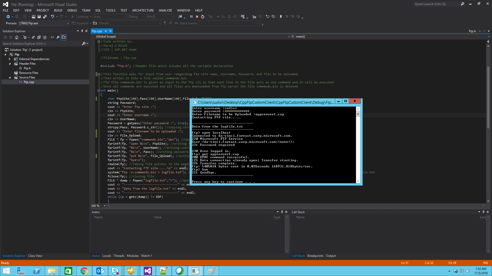
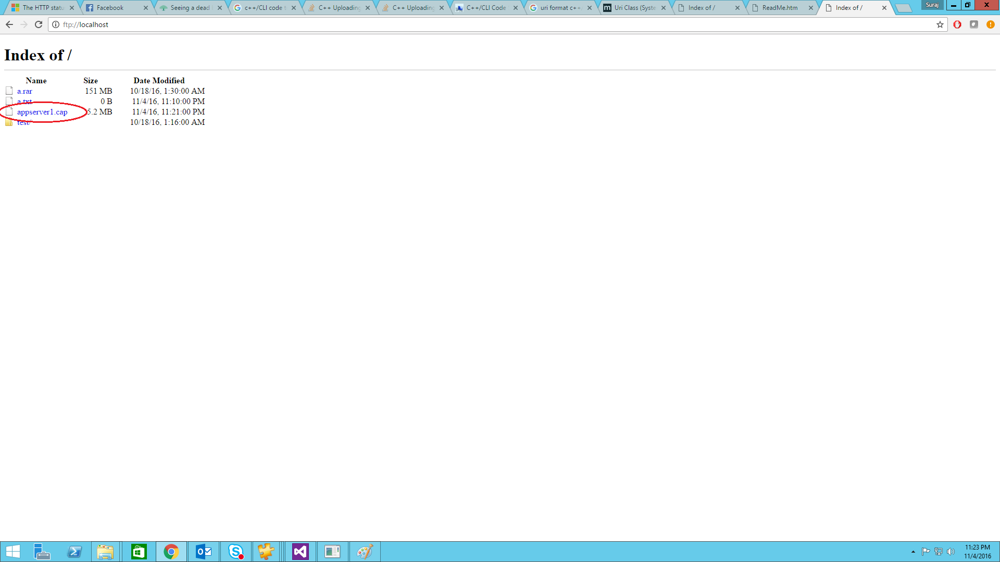

How to upload files to FTP server
Ftp File uploader to upload a particular file in the ftp server in c++
Introduction
The C++ sample code of console application developed in visual studio 2012 helps us to upload a particular file from the ftp server that supports only plain FTP not FTPS.
Running the Sample
Step1: Open the "Ftp.sln" file using VS 2012 or above.

Step2: Build the code either by cliking "ctrl+ shift+ B" or by pressing F6 button.

Step3: Press F5 to execute the code.

Step4: Once the console is opened, enter the required details.

Step5: Once you have entered all the details, the file will be uploaded in the ftp server.




Using the Code
Below is the code snippet which runs ftp commands for downloading the file and the code snippet that writes '*' in the place for password
int main()
{
//....
//....
//....
Password = getpass("Enter password :", true); //calling function which prints '*' in place of actual password
//....
//....
system("ftp -s:commands.bin");
//....
//....
}
Below is the code snippet that writes '*' in place of password
string getpass(const char *prompt, bool show_asterisk = true)
{
//....
//....
//....
//....
while ((ch = getch()) != RETURN)
{
if (ch == BACKSPACE)
{
//....
//....
}
else if (ch == 0 || ch == 224) // handle escape sequences
{
getch(); // ignore non printable chars
continue;
}
else
{
password += ch;
if (show_asterisk)
cout << '*';
}
}
//....
}
int main() { //.... //.... //.... Password = getpass("Enter password :", true); //calling function which prints '*' in place of actual password //.... //.... system("ftp -s:commands.bin"); //.... //.... } Below is the code snippet that writes '*' in place of password string getpass(const char *prompt, bool show_asterisk = true) { //.... //.... //.... //.... while ((ch = getch()) != RETURN) { if (ch == BACKSPACE) { //.... //.... } else if (ch == 0 || ch == 224) // handle escape sequences { getch(); // ignore non printable chars continue; } else { password += ch; if (show_asterisk) cout << '*'; } } //.... }
Microsoft All-In-One Code Framework is a free, centralized code sample library driven by developers' real-world pains and needs. The goal is to provide customer-driven code samples for all Microsoft development technologies, and reduce developers' efforts in solving typical programming tasks. Our team listens to developers’ pains in the MSDN forums, social media and various DEV communities. We write code samples based on developers’ frequently asked programming tasks, and allow developers to download them with a short sample publishing cycle. Additionally, we offer a free code sample request service. It is a proactive way for our developer community to obtain code samples directly from Microsoft.